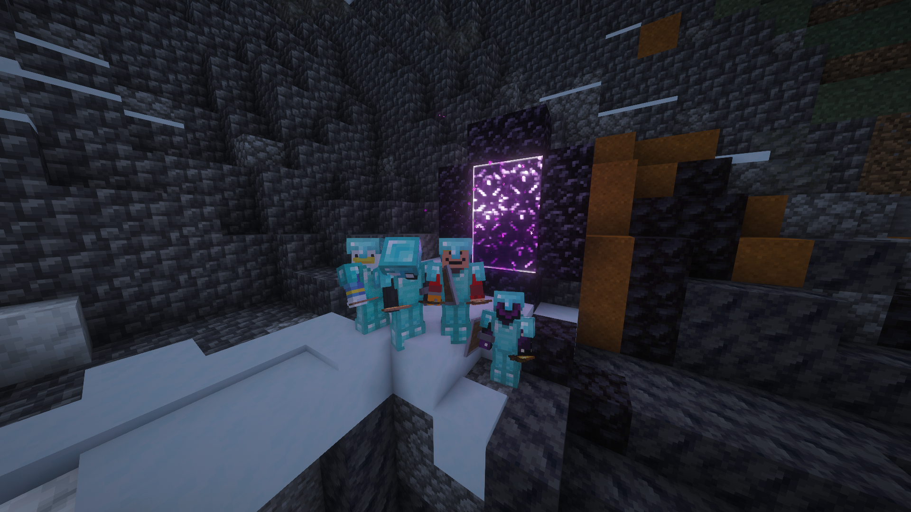
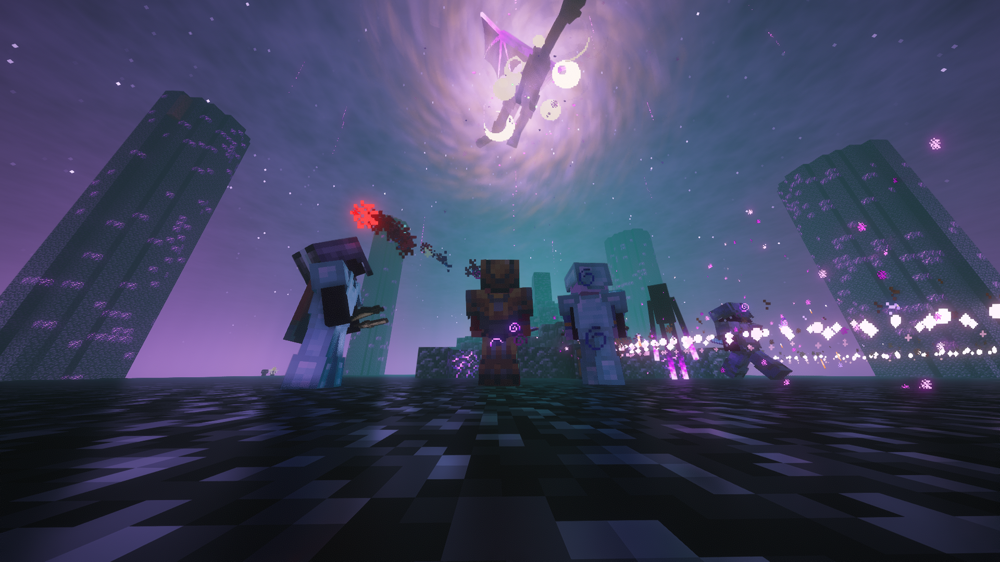

I self host my own Minecraft server for me and my friends to play on!
I use an HP office desktops as my homelab server, which is connected via ethernet to my router. On it I run Ubuntu Server with a Crafty Controller and Playit docker container. Crafty Controller is a free and opensource web-based control panel and launcher for managing Minecraft Servers. It allows for spinning up multiple servers, file and configuration management, and automated scheduled tasks for backups and restarting.
I run a PlayIt agent container, which is a tunneling service that allows me to use a PlayIt IP address to send to my friends. This allows them to connect to my server without me having to forward ports on my router. I also run a separate UDP tunnel in the PlayIt dashboard for voice chat, since Minecraft only supports raw TCP traffic by default. I remote into my PC via SSH and access the Crafty Controller dashboard through the browser. For security, I only access my homelab infrastructure on my own network, but I may consider using something like Tailscale to tunnel into it securely and remotely.
I run 2 servers: A 26.3 Fabric instance and a 1.21.1 Neoforge instance. The Fabric server is essentially Vanilla Minecraft with some datapacks and performance mods, so no extra setup is required on the client's part. The Neoforge server runs my own modpack that I have my friends download and run. For both servers, I carefully optimized the performance + JVM flags and made sure to pregenerate the worlds so that my friends get a smooth, lag free experience.
Even though its not very security related, this is definitely my favorite IT project. I got to learn how to be a good system administrator/maintainer, and what its like to provide a service to a group of people. Currently we've been playing on it for 2+ months and have had a lot of fun building and exploring.
Here are some in-game screenshots:

